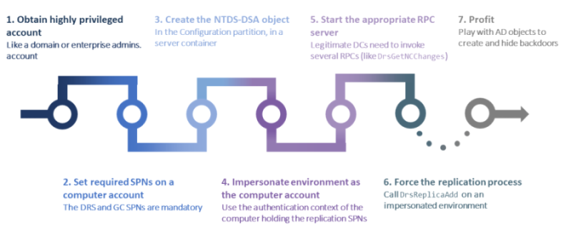

DCShadow
During
BlueHatIL 2018 Benjamin Delpy
and Vincent Le Toux introduced their new AD attack strategy called "DCShadow".
DCShadow can appear
similar to DCSync but is more intrusive and definitely different
◇ BlackHat slides:
https://www.dcshadow.com/us-18-Delpy-LeToux-So-I-Became-A-Domain-Controller.pdf
◇ DCShadow site:
https://www.dcshadow.comMicrosoft
released a fix for it?DCShadow only relies on features that were there by design! It does not abuse
any exploit or vulnerability (similar to DCSync)
Because of that it will not be patched by a Microsoft update.
Trying to counter it would need to change the way AD works, and hence break the system. The authors of the research
previously published the “
DCSync” attack and Microsoft did not issue
any patch, as it only uses legitimate APIs. “Fixing” it would mean forbidding DC replication. If it ain’t broke,
don’t fix it. AD is not broken.
DCShadowDCShadow attack aims to register new fake
Domain Controllers to inject malicious AD objects and so create backdoors or any kind of illegitimate access or
right. To reach this goal, “DCShadow” attack must modify the targeted AD infrastructure database to authorize the
rogue “fake” server to be part of the replication process.
DCShadow attack is not a privileges escalation
vulnerability, but a misappropriation of Active Directory mechanism. It doesn’t allow red teamers to gain privileges
but give them another solution to become persistent or to make illegitimate actions in a directory
infrastructure.
DetectionDCShadow
can be detected by reviewing the Windows event log for the temporary addition of a DC(creation and immediate
deletion).
Look for:
◇ 5137 → A directory service object was created
◇ 5141 → A directory service
object was deleted
Bibliography:
•
https://www.dcshadow.com/us-18-Delpy-LeToux-So-I-Became-A-Domain-Controller.pdf•
https://www.dcshadow.com•
https://blog.alsid.eu/dcshadow-explained-4510f52fc19d•
https://www.ired.team/offensive-security-experiments/active-directory-kerberos-abuse/t1207-creating-rogue-domain-controllers-with-dcshadow
{kind=link}